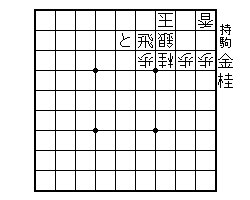

|
将棋関係のページリストです。
- 自作詰将棋 ... 自作詰将棋を22問出題しています。右の図面は７手詰めですが、もっと易しいものも難しいものもあります。1996年から細々と続けている、当サイトの目玉です。携帯電話からは、気まぐれモバイルで同じ詰将棋を見ていただくことができます。サイト開設から10年間、解答募集と正解者の掲載をしていましたが、2006年5月30日に解答募集を打ち切り、正解手順を掲載しました。記念として、正解者のお名前が残っています。
- 将棋リンク ... 役立つページを集めました。プロ棋士のサイトが一覧になっています。気まぐれサーバー内のページです。どなたでも編集できます。
- 将棋の棋譜に著作権はない ... 当サイト管理者の主張です。
|

|